Add energy, and matter changes state.에너지를 더하면 물질의 상태가 바뀝니다
Plasma: gas with electrons torn away.플라즈마: 전자가 떨어져 나간 기체
For 380,000 years, everything was plasma.우주는 처음 약 38만 년 동안 전부 플라즈마
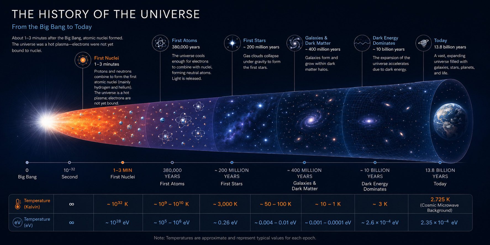
🔍 Click to enlarge🔍 클릭하면 확대Plasma is all around us.플라즈마는 우리 주변 어디에나 있습니다
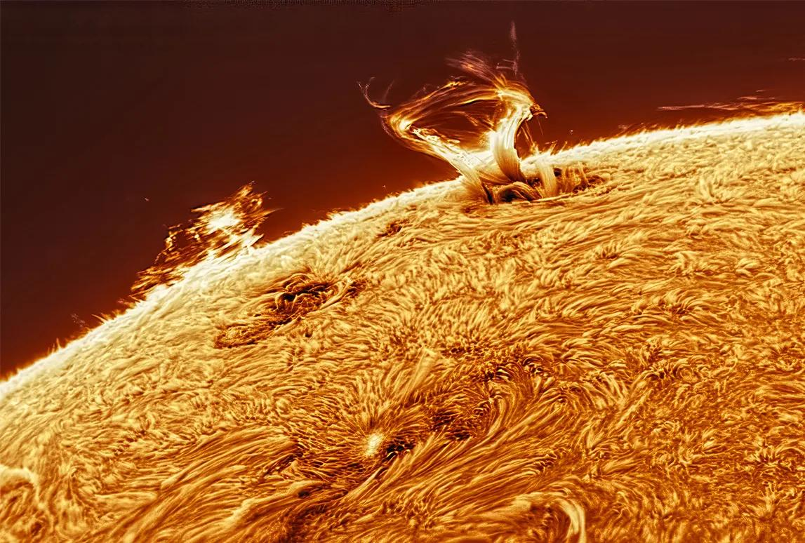
Sun and stars태양과 별
NATURAL자연A giant ball of plasma.거대한 플라즈마 덩어리
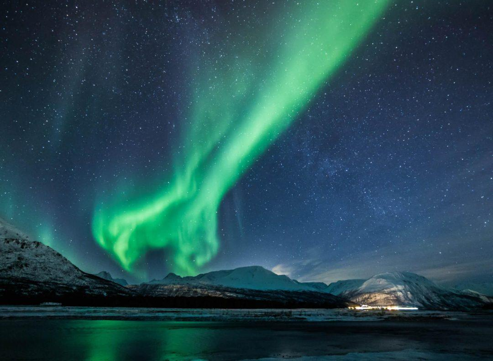
Aurora오로라
NATURAL자연Charged particles from the Sun hit the upper atmosphere.태양의 하전 입자가 상층 대기와 부딪힙니다
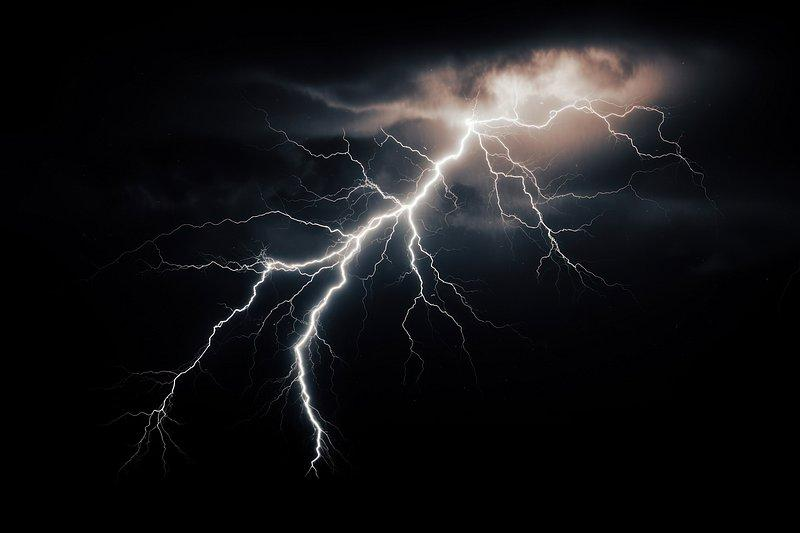
Lightning번개
NATURAL자연Air becomes plasma for a split second.공기가 아주 짧은 순간 플라즈마가 됩니다
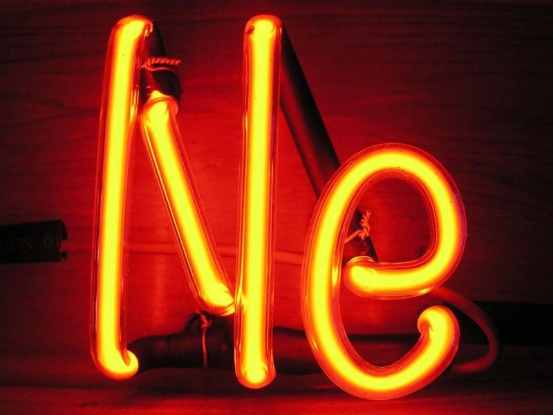
Neon sign네온사인
MADE BY US인공Gas glows when current passes through.전류가 흐르면 기체가 빛납니다
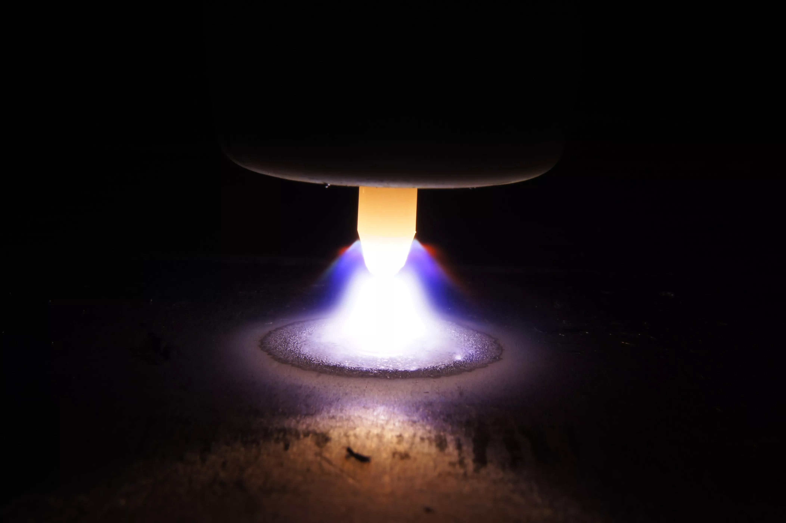
Arc welding아크 용접
MADE BY US인공An electric arc is hot enough to melt metal.전기 아크가 금속을 녹일 만큼 뜨겁습니다
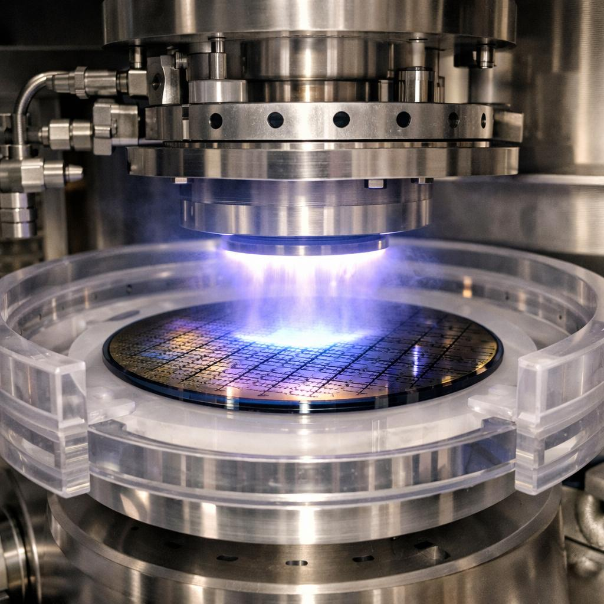
Chip equipment반도체 장비
MADE BY US인공Our topic: plasma inside a Chamber.우리의 주제: Chamber 안의 플라즈마
Plasma in the factory.공장 속의 플라즈마
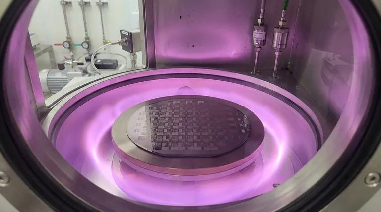
Semiconductor반도체
Etch, thin-film deposition and cleaning of wafers. Many steps for every chip.웨이퍼의 Etch, 박막 증착, 세정. 칩 하나에 아주 많은 단계가 쓰입니다.
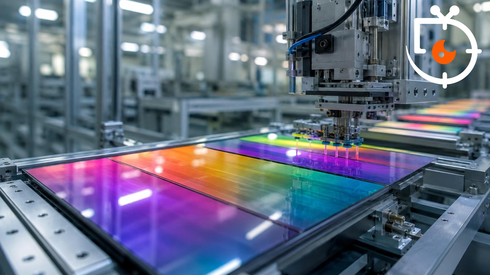
Display디스플레이
Builds the tiny transistors (TFT) that switch every pixel of an OLED or LCD screen.OLED·LCD 화면의 모든 화소를 켜고 끄는 작은 트랜지스터(TFT)를 만듭니다.
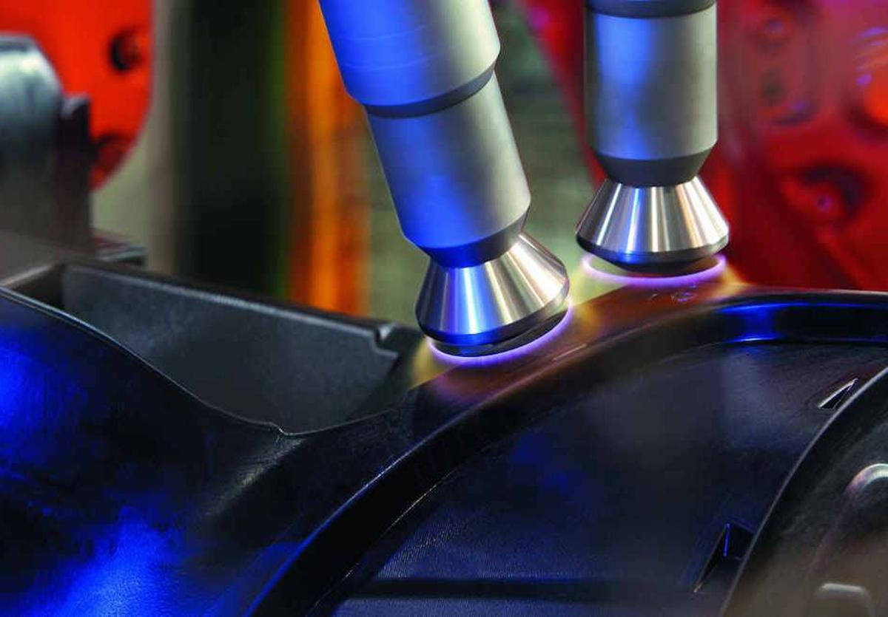
Surface treatment표면 처리
Cleans and activates surfaces so paint, glue or coating sticks to plastic, metal or glass.플라스틱·금속·유리 표면을 세정·활성화해 도료, 접착제, 코팅이 잘 붙게 합니다.
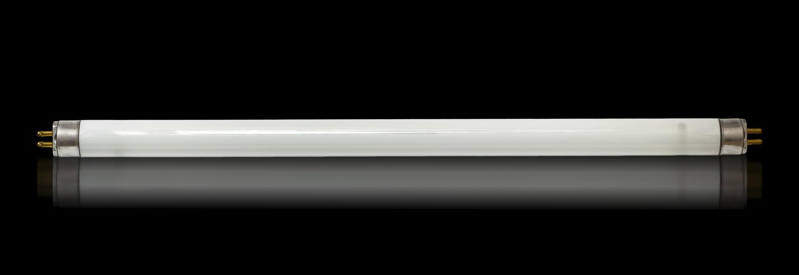
Lighting조명
Neon signs, fluorescent lamps and HID lamps glow because the gas inside is plasma.네온사인, 형광등, HID 램프는 안의 기체가 플라즈마이기 때문에 빛납니다.
Plasma in everyday life.우리 삶 속의 플라즈마
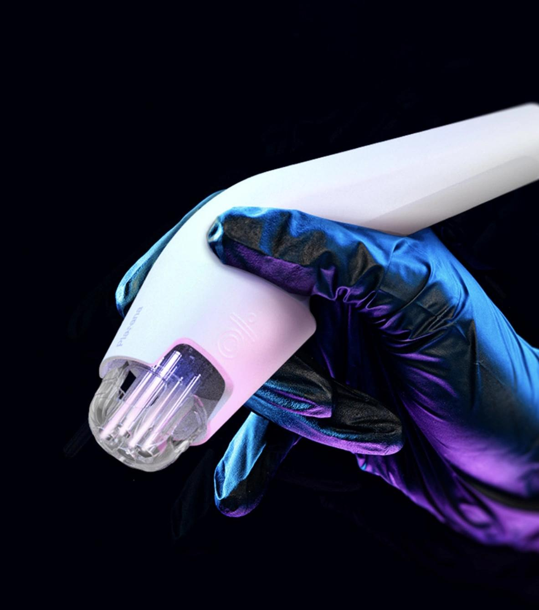
Medical의료
Low-temperature plasma sterilizes tools and helps wounds heal. Cancer therapy is still research.저온 플라즈마는 기구를 살균하고 상처 치유를 돕습니다. 암 치료는 아직 연구 단계입니다.
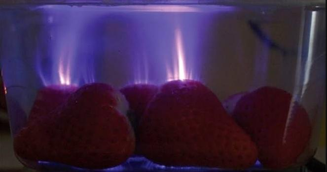
Food식품
Kills germs on the surface of food and packaging without heating the food.음식을 가열하지 않고 표면과 포장의 세균을 없앱니다.
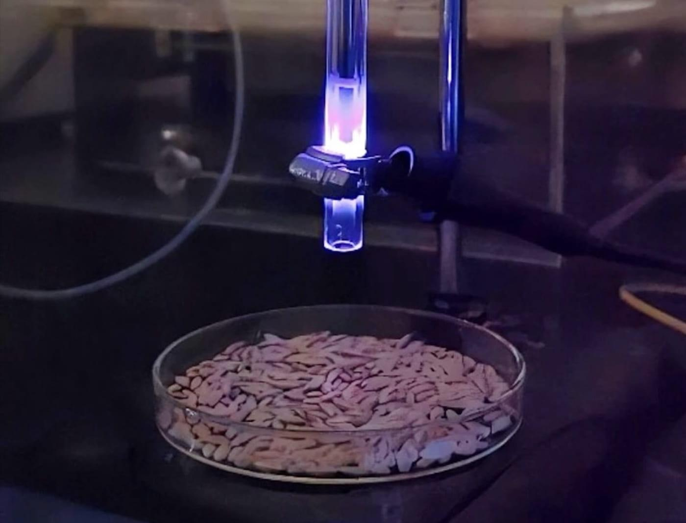
Agriculture농업
Plasma-treated seeds and water are being studied for better sprouting and as fertilizer.플라즈마로 처리한 씨앗과 물이 발아와 비료로 도움이 되는지 연구 중입니다.
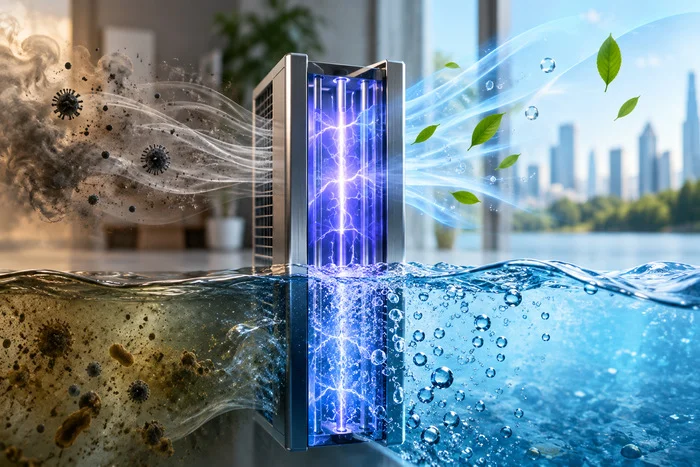
Environment환경
Breaks down harmful gases (VOCs) and helps clean air and water.유해 가스(VOC)를 분해하고 공기와 물을 정화하는 데 쓰입니다.
Where plasma may take us.플라즈마가 열어 갈 미래
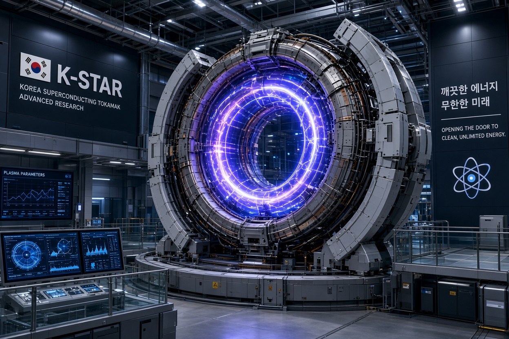
Fusion energy핵융합 에너지
Make electricity the way the Sun does. Plasma hotter than 100 million degrees is held in place by magnetic fields.태양처럼 전기를 만듭니다. 1억 도가 넘는 플라즈마를 자기장으로 가둬 둡니다.
Space thrusters우주 추진기
Ion and Hall thrusters push satellites and probes with a stream of plasma.이온·홀 추진기는 플라즈마 흐름으로 위성과 탐사선을 밀어 줍니다.
Hydrogen production수소 생산
Plasma can split methane or water into hydrogen. Research and pilot stage.플라즈마로 메탄이나 물에서 수소를 얻는 연구입니다. 연구·시범 단계.
Nano materials나노 소재
Grows nanotubes, diamond-like films and ultra-thin coatings.나노튜브, 다이아몬드 유사 박막, 초박막 코팅을 키워 냅니다.
Low-temperature plasma: a story of electrons.저온 플라즈마는 전자의 이야기입니다
An electron leaves its orbit.전자가 궤도를 떠납니다.
A fast electron hits an atom and knocks an outer electron free (ionization). It takes only about 5 to 25 eV. The nucleus is not touched.빠른 전자가 원자에 부딪혀 바깥쪽 전자를 떼어냅니다(이온화). 약 5~25 eV면 충분합니다. 핵은 건드리지 않습니다.
Two nuclei must collide.두 원자핵이 부딪혀야 합니다.
Nuclei repel each other. To push them together takes about 10,000 eV and over 100 million degrees. This is what happens in fusion.원자핵끼리는 서로 밀어냅니다. 붙이려면 약 10,000 eV, 1억 도 이상이 필요합니다. 핵융합에서 일어나는 일입니다.
Splitting versus joining.쪼개는 원자력, 합치는 핵융합
Watch the reaction핵반응 영상 보기Splitting a heavy nucleus무거운 핵을 쪼갭니다
Today's nuclear power plants. Produces long-lived radioactive waste.오늘의 원자력 발전. 수명이 긴 방사성 폐기물이 나옵니다.
Joining light nuclei가벼운 핵을 합칩니다
How the Sun shines. Fuel is hydrogen isotopes.태양이 빛나는 방식. 연료는 수소의 동위원소입니다.
Fusion: how far have we come?핵융합은 어디까지 왔을까?
2024. Plasma at an ion temperature of 100 million degrees held for 48 seconds. In H-mode it ran for 102 seconds.2024년. 이온 온도 1억 도의 플라즈마를 48초 유지했고, 고성능(H-mode) 운전은 102초를 기록했습니다.
20 Jan 2025. High-confinement plasma held for over 17 minutes.2025년 1월 20일. 고성능(H-mode) 플라즈마를 17분 넘게 유지.
Dec 2022. First laboratory fusion "ignition": more fusion energy than the laser energy delivered.2022년 12월. 최초의 실험실 핵융합 "점화". 투입한 레이저 에너지보다 핵융합 에너지가 더 많이 나왔습니다.
Built in France by an international partnership that includes Korea. Its schedule has been revised; check the latest.한국을 포함한 국제 공동 프로젝트로, 프랑스에서 조립 중입니다. 일정이 수정되었으니 최신 소식을 확인하세요.
Cool plasma and hot plasma.저온 플라즈마와 고온 플라즈마
ROOM300 K (0.03 eV)
실온
SUN SURFACE5,800 K (0.5 eV)
태양 표면
SUN CORE1,500만 K (1.3 keV)
태양 중심